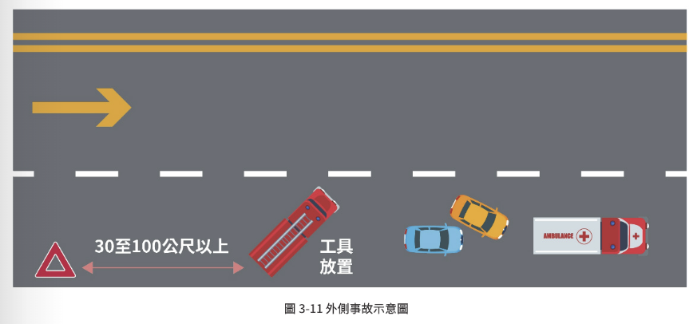

救護職業安全概論
救護現場充滿未知與動態風險，樹立牢固的「安全文化」是平安回家唯一的路。
⚠️ 現場安全與安全第三
一直以來，「現場是否安全？」、「安全！」已經是全國 EMT 朗朗上口、心照不宣的組織密語。這暗示如果無法確認安全，就沒有接下來的救護作為。
💡 外傷救護的典範轉移：TECC
美國發展了 TECC (戰術緊急傷患照護)，強調主動判斷所在的「動態風險等級」並根據分級行動，而非僅被動等待警方淨空現場。
「安全第三」的核心重點
「誠實面對現實，認清救護工作本質上的危險，將風險降到最低。」
📊 消防人員傷亡數據 (113年度)
根據消防署統計，各勤務類別傷亡案件中，緊急救護佔比最高！
肌肉骨骼傷害與搬運技巧
工作相關肌肉骨骼疾病 (WMSDs) 是 EMT 最常見的職業傷害，其中扭傷和拉傷佔了 67%（43% 涉及背部）。
🚨 搬運前的事前規劃與評估 (P.67-68)
評估病人體重、環境限制與現有資源。
若有顧慮務必請求支援，切勿冒險。
團隊與病人清楚溝通，保持口令。
評估合適器材並熟悉操作。
評估能否坐起、站立或自己走。
注意潛在危險，如濕滑或狹窄空間。
是否有替代方案可避免徒手搬運？徒手搬運應是最後手段。
1. 保持良好姿勢 (維持脊椎自然挺直)
【重要觀念：課本圖 3-3 脊椎受力影響】
搬運時應隨時保持背部挺直，避免彎腰或扭轉身體。不良的彎腰姿勢會使脊椎承受嚴重的剪力與集中高壓，極易造成肌肉拉傷或椎間盤突出。請利用髖關節與膝關節屈伸，而非彎曲腰椎。
針紮感染風險與傳染病防治
執行 IV、血糖監測、呼吸道處置時，存在高度生物性風險，必須落實標準防護。
🩹 針紮感染預防措施與處置
- 個人防護裝備 (PPE)：救護全程戴手套。戴口罩，必要時戴護目鏡、穿防護衣，在防護措施未完備前應與傷病患保持一公尺之安全距離。
- 使用安全針具：推薦使用具備安全防針紮設計的針具（如自動回縮或針頭防護罩），嚴禁單手回套針帽。
- 立即棄置：使用完畢之銳利物須立刻放入堅固、耐穿刺的「銳利物收集箱」中。
- 暴露後處理：若不慎發生針紮，應立即以清水與肥皂沖洗傷口、回報長官、並迅速至醫院接受醫學評估與暴露後預防處置（PEP）。
🦠 常見傳染病四大家族
救護車行駛安全與事故現場停放原則
研究顯示，EMS 人員因車禍死亡的機率高達 45%。安全駕駛與科學停車是保障防線。
🥊 暴力傷害風險 (P.72)
約有 4% 的 EMT 職業傷害與暴力事件有關。這些事件可能來自病人（因疾病失控）、家屬或現場目擊者情緒激動引發。EMT 應接受應對暴力的專業訓練（如危機處理小組），並要求在高風險勤務中配備警力支援，避免身體遭受威脅。
🚦 通過十字路口安全防禦 (NAEMT 建議)
臺灣救護車事故大多發生在路口（佔致命路口事故 62.5%）。請落實以下步驟：
1. 警示操作：接近路口前，切換警報器頻率並短促按喇叭提醒他人。
2. 觀察與確認：確認各方交通狀況、監聽無線電，注意盲點車輛。
3. 完全停止：在路口停止線前「完全煞停」，與其他車輛確認眼神。
4. 逐步前進：進入路口後持續按喇叭與閃燈，確認車流停止後再通過。
5. 每車道逐步通行：逐一確認每個車道的駕駛都已讓出路權。
6. 確認安全：持續觀察車流，直至完全通過路口並進入計畫車道。
🚒 事故現場車輛停放與區域劃分
消防車、救護車應以 15 至 45 度的斜角停放，將現場與其他車道安全隔離。
一般道路應在 30 至 100 公尺以上；高（快）速公路應在 100 公尺以上。

[請在此放置圖 3-11 停放示意圖 img-3-1.png]圖 3-11 事故現場車輛停放示意圖
面對病人死亡之心理建設與壓力評估
接受死亡是工作的一部分，唯有健康的 EMT 才能提供高質量的醫療服務。
🤝 與家屬溝通的應對原則
- 同理與尊重：以明確、溫和且清晰的語言傳達病人的狀況。
- 避免術語：絕不使用過於專業或含糊不清的說法，以免增加家屬的困惑或不安。
- 給予喘息空間：應給予家屬時間與空間來接受事實，理解他們可能出現悲傷、憤怒等情緒。
- 態度穩定：保持自己的情緒與態度穩定，避免受到家屬情緒劇烈波動的影響。
🧘 壓力調適與自我照顧
- 正視失落感：病人未能存活時產生失落感、自責是正常的，必須認知到 EMT 並非決定生死的唯一因素。
- 建立支持系統：積極與同事、家人分享情緒，不要獨自承受。
- 健康生活方式：規律運動、充足睡眠、均衡飲食能有效減緩壓力。
- 尋求專業協助：若長期感到沮喪，應儘早尋求心理諮商。
📝 壓力指數測量表 (P.74)
請誠實評估您最近是否經常出現以下狀況：
創傷後壓力症候群 (PTSD) 與 進階安全文化
除了個人層面的身心調適，制度上的「公正文化」與「特殊場景應對」是 EMT-2 的核心素養。
🧠 創傷後壓力症候群 (PTSD)
EMT人員因高頻率目睹慘烈現場、大量傷病患或兒童死亡，為 PTSD 的極高風險族群。
• 經驗重現：如夢境、閃回(Flashback)，反覆目睹病人死亡的慘烈畫面。
• 逃避與麻木：刻意遠離相關的人事物、封閉情感、長期情緒低落。
• 過度警覺：睡眠障礙、易怒、難以集中注意力、過度焦慮。
• 物質濫用風險：研究發現，前線救護人員常出現以「酒精或藥物」作為不良對抗壓力的手段，需密切注意。
🛡️ 組織安全管理：公正文化與 TRM
1. 公正文化 (Just Culture)：
鼓勵人員主動報告錯誤或潛在風險，強調「系統性審查 (Systematic Review)」而非一味盲目懲罰個人，藉由改善流程避免悲劇重演。
2. 團隊資源管理 (TRM)：
源自航空業 CRM。加強前線同仁在救護現場的清晰指令、資訊共享、防範誤解，以提升高壓環境下的應變效率。
P.86 07 「安全」的其他核心關鍵議題：特殊場景應對
交通與大量傷病
運用救護車輛作為物理屏障（斜停擋車），並穿戴高辨識度防護裝備，縮短暴露車流的時間。
暴力事件應對
首要確保自身安全，必要時在安全位置等待警方協助。必須熟練掌握口頭降溫技巧 (De-escalation) 穩定個案。
政策與健康管理
建立完整的員工協助方案 (EAP)、健康檢查，並落實定期的情境模擬演練以提升心理韌性。